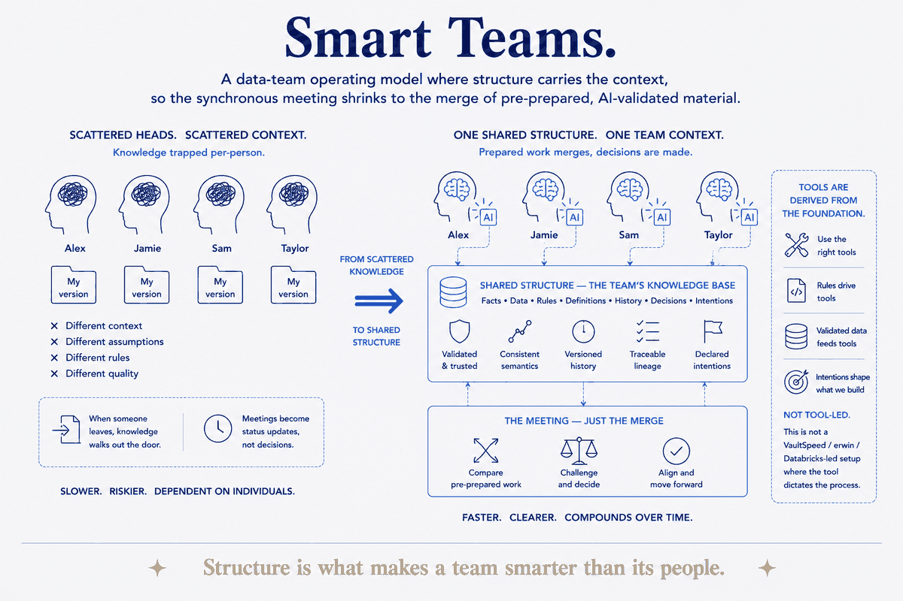

A data-team operating model where structure carries the context, so the synchronous meeting shrinks to the merge of pre-prepared, AI-validated material.

A data-team operating model where structure carries the context, so the synchronous meeting shrinks to the merge of pre-prepared, AI-validated material.
Smart Teams is what a data-modeling/-engineering team looks like when the operating model is built on structure instead of meetings. Each person, with their own AI assistant, analyzes the facts, data and rules beforehand — plans, retros, demos and summaries are generated and validated underneath. The synchronous meeting then shrinks to the one thing structure can't do for you: the merge of that pre-prepared work, where humans spend their time only on judgment and decision. Tools are derived from the foundation — the rules, the validated data, the declared intentions — not leading it; this is explicitly not a VaultSpeed/erwin/Databricks-led setup where the tool dictates the process.
It introduces new roles that a structure-first team actually needs: a rules/knowledge architect, a validation/DQ engineer, a foundation/context engineer, an AI-assistant orchestrator, a governance/control steward, and a clear decision owner. These aren't the classic ETL-developer seats — they're the seats that make sense when the platform is generated from a validated model and the scarce human contribution is judgment, not typing.
This is Jaco's most commercially relevant idea and the true bridge between the two brands: it is the personal data architecture scaled from one person to a team, proven personally (the SBM/B2C proof) and sold to data-product teams (the MDDE/B2B offer). It runs the same validation loop as everything else in the system, and it is honest about its own maturity: proven on Jaco himself, not yet run with a real team — a vision awaiting a first pilot. That personal-proof-to-team-sale gap is exactly what a first pilot (and the certification pillar) are meant to close.
Related: Operating model · The meeting is just the merge · Personal data architecture · Federated brains · The validation loop · Transfer by design · Practice what you evangelize.